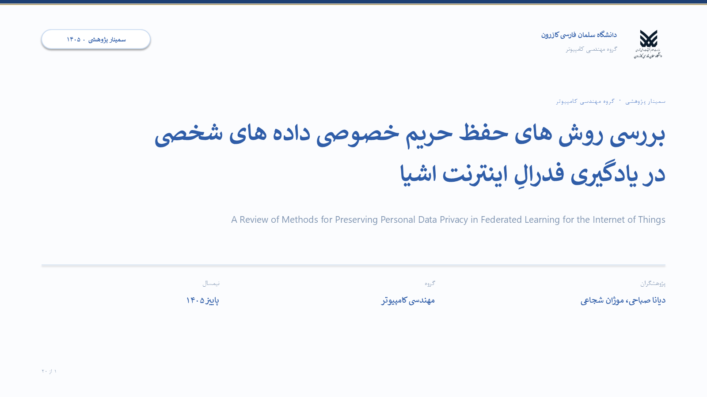

۱
جلد
دیانا
مدت: ۰:۳۰
تجمعی: ۰:۳۰
افتتاحیه
پیام کلیدی: یک روز عادی با دستگاههای هوشمند؛ سپس یک پرسش: دادههایشان چه میشود؟
چرا این اسلاید: اولین ۳۰ ثانیه فقط یک کار دارد: مخاطب بفهمد موضوع چیست، چه کسی ارائه میدهد و چقدر طول میکشد.
ربط با قبل: نقطهٔ شروع است؛ هنوز چیزی گفته نشده که این اسلاید به آن وصل شود.
چه بگویید
یک روز عادی را تصور کنید: ساعت هوشمندتان ضربان قلب را میفرستد، ترموستات دمای خانه را تنظیم میکند و دوربین خانه رفتوآمد را ثبت میکند.
همین دستگاهها موضوع سمینار ما هستند: اینترنت اشیا و حریم خصوصی دادههایشان در یادگیری فدرال.
من دیانا صباحی هستم و همراه موژان شجاعی در سی دقیقه از مسئله شروع میکنیم، تهدیدها و روشها را میبینیم و در پایان یک چارچوب انتخاب روش ارائه میدهیم.
- تماس چشمی و لبخند
- اشاره به عنوان و پژوهشگران
انتقال:دیانا → فهرست مطالب
اسلاید ۱ از ۲۰
دیانا · ۰:۳۰